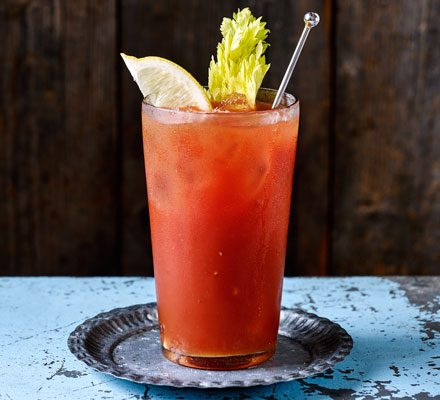

Bloody Mary

Description
A Bloody Mary is simple to make and produces a rich, spicy and savory cocktail. This recipe, found here, produces a Classic Bloody Mary to enjoy at your next get together.
For more cocktail recipes visit the Recipes Index
Ingredients
This recipe makes 1 Bloody Mary:
- Tomato Juice: 3/4 cup of v8 or another spicy tomato juice cocktail.
- Ice: As needed.
- Vodka: 1 jigger vodka.
- Worcestershire Sauce: 2 dashes.
- Hot Pepper Sauce: 1 dash from a hot pepper sauce like Tobasco.
- Salt and Pepper: 1 tsp of salt and more salt and pepper to taste.
- Garnishes: Celery and garlic-stuffed olives. However, garnishes can be substituted, added, or removed to your liking.
Steps
Since a Bloody Mary does not contain any carbonated beverages, all you need is a cocktail shaker.
- Put all the ingredients, except garnishes, into your cocktail shaker.
- Shake it up.
- Serve in your glass of choice with the chosen garnishes.
- Enjoy!!